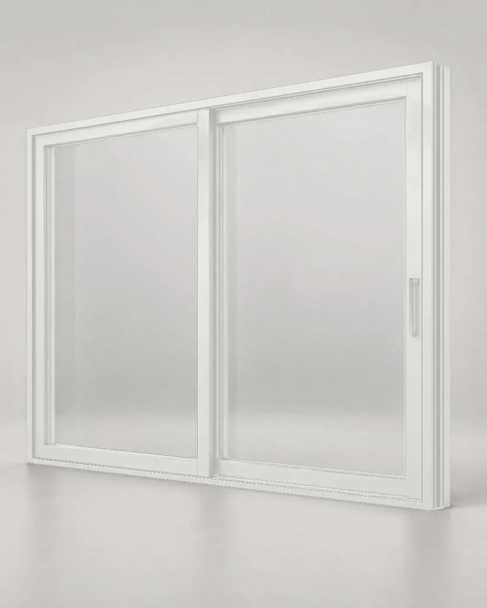
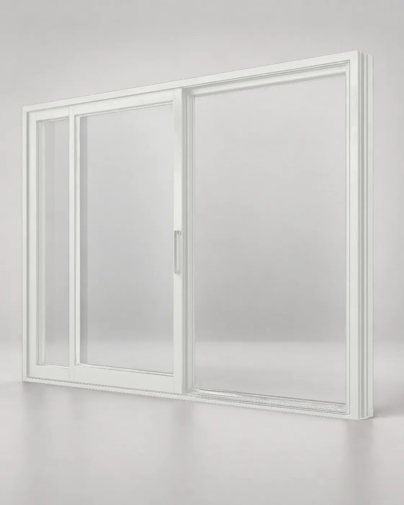
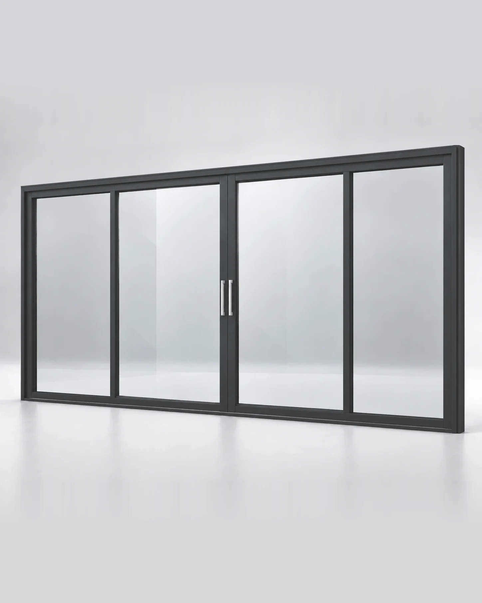
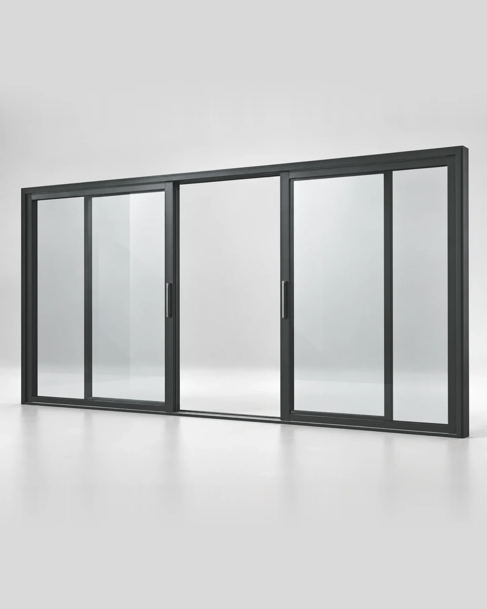

158мм
2 направляющие
Базовый вариант для большинства схем HS: одна линия движения и одна соседняя секция.

Алюминиевый HS-портал для выхода на террасу, в сад или на веранду. Крупные стеклянные створки движутся параллельно фасаду и не занимают пространство комнаты.
Подход
Проектируем большой открываемый проём так, чтобы профиль не спорил с домом, а механика оставалась почти незаметной.
Изучить спецификацию ↓02 · Характеристики
Основные размеры профиля, варианты стеклопакетов, герметичность, порог и работа подъёмно-раздвижного механизма — без лишней терминологии.
Базовый вариант для большинства схем HS: одна линия движения и одна соседняя секция.
Более глубокая рама для многопольных схем, когда створки должны работать на трёх уровнях.
* Технические ориентиры профильной системы и применяемой Lift&Slide-фурнитуры. Для конкретного HS-портала параметры подтверждаем после расчёта размера, стеклопакета и монтажного узла.
Стеклопакеты для HS-портала
«44 мм» — это общая толщина пакета, а не толщина одного стекла. Внутри — три стекла и две герметичные камеры, разделённые дистанционными рамками.
Герметичность HS-портала
Герметичность зависит не только от профиля: важны прижим створки, уплотнения, нижний порог, дренаж и монтажное примыкание.
При закрывании Lift&Slide створка опускается и возвращается к рабочему контуру уплотнений.
Положение порога согласуем с чистовым полом. Низкий визуальный порог не отменяет требований к гидроизоляции.
Вода, попавшая в зону нижнего профиля, должна иметь предусмотренный путь наружу — его нельзя перекрывать отделкой.
Даже хороший профиль не компенсирует неверную геометрию основания, монтажный шов или наружное примыкание.
Это характеристика испытанной профильной системы. Герметичность готового портала зависит ещё и от стеклопакета, изготовления, регулировки и монтажа.
Подъёмно-раздвижной механизм
Поворот ручки сначала приподнимает створку и разгружает контур уплотнений. После этого створка движется по направляющей параллельно фасаду.
Фурнитура переводит створку из закрытого состояния.
Вес переносится на роликовые каретки, прижим к уплотнениям снимается.
Створка плавно движется вдоль соседней секции по направляющей.
В обратном положении створка опускается и возвращается к контуру уплотнений.
03 · Схемы открывания
Выберите ширину и сторону — схема показывает, как движутся створки и какой проход получится.
Интерактивная схема помогает подобрать конфигурацию под ваш проём. Точные размеры и компоновку инженер подтвердит на замере.


* Проход указан ориентировочно. Финальную геометрию и монтажный узел подтверждает инженер.
04 · Конфигурации
Сначала выбираем размерный класс и схему. Цвет, направление, стеклопакет и монтажный узел уточняются внутри товара или рассчитываются индивидуально.






05 · Расчёт
Укажите примерный размер проёма, схему и стеклопакет. Предварительную стоимость покажем сразу — без регистрации и отправки формы.
HS-портал работает не отдельно от дома, а вместе с фасадом, интерьером и маршрутом на участок. Показываем именно этот результат.

Раздвижная часть объединена с глухим остеклением в одну архитектурную линию.
Широкий проход из жилой зоны без зоны распахивания створки.

Большой открываемый проём при минимальном визуальном дроблении фасада.
Процесс
Проверяем геометрию проёма, уровень чистового пола, основание и условия монтажа.
Определяем схему открывания, стеклопакет, пороговый узел и готовим точную смету.
Собираем портал, проверяем геометрию, комплектацию и работу Lift&Slide механизма до отгрузки.
Устанавливаем, герметизируем, регулируем створки и сдаём готовую конструкцию на объекте.
Ваш проект
Пришлите размеры, план дома или фотографию. Инженер проверит HS-схему и подготовит предварительный расчёт.